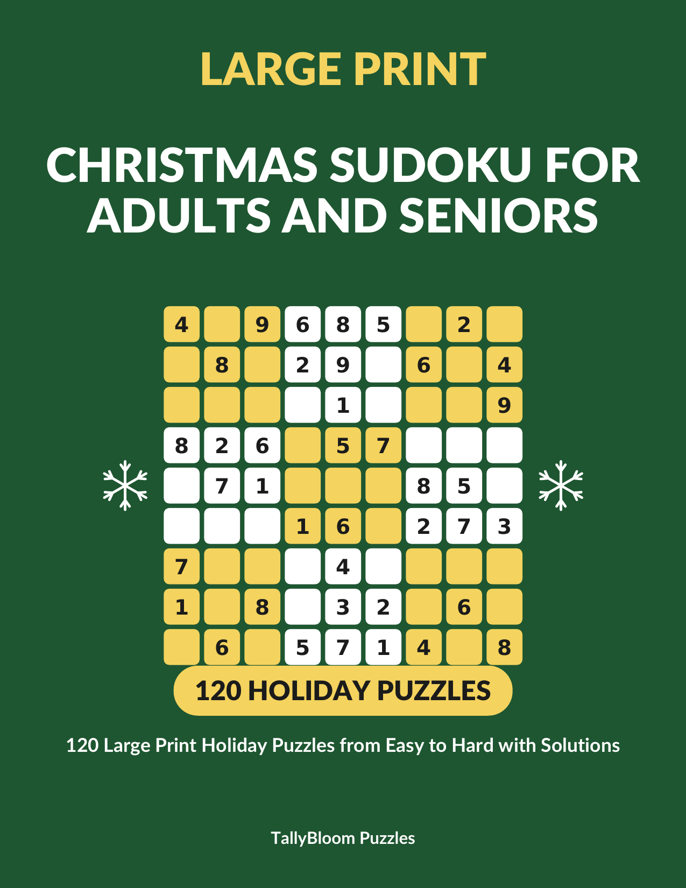

Christmas Sudoku for Adults and Seniors: 120 Large Print Holiday Puzzles from Easy to Hard with Solutions - A Stocking Stuffer Puzzle Book
Unwrap 120 sudoku puzzles printed in big, bold numbers on large 8.5 x 11 inch pages, from gentle warm-ups to satisfying challenges.
Buy on Amazon →
Inside the book
- 120 holiday sudoku puzzles: 40 Easy, 40 Medium and 40 Hard
- Large print: big, bold numbers on large 8.5 x 11 inch pages, two puzzles per page
- Every puzzle checked by computer: exactly one solution, solvable by logic alone with no guessing
- Honest difficulty labels, set by the solving steps each puzzle needs
- Full solutions at the back of the book
See it on Amazon →Printed paperback, 8.5 x 11 inches, sold and shipped by Amazon.